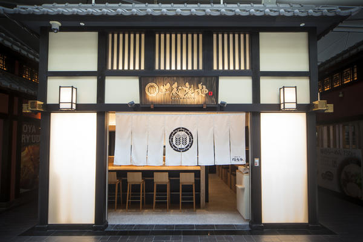
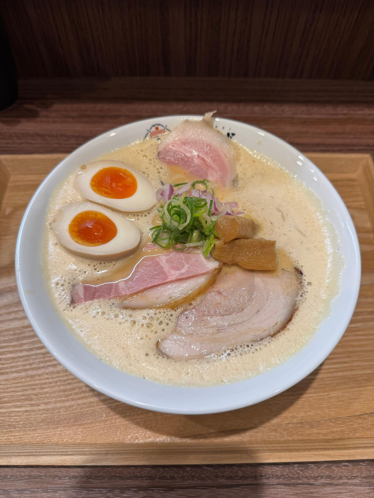

愛知県知多市
こだわり白湯
鶏の旨みを一滴残らず引き出した、濃厚鶏白湯ラーメン。

丸鶏と鶏ガラを長時間強火で炊き上げ、白濁するまで旨みを引き出した濃厚スープ。
スープに合う国産小麦の自家製麺と、厳選した鶏肉・調味料だけを使用しています。
濃厚な白湯スープに絡む、コシと喉ごしにこだわった自家製麺を毎日仕込んでいます。
看板メニュー
丸鶏を炊き出した濃厚白湯スープに、自家製麺と厳選チャーシューを合わせた井上家の一杯。
¥900 (税込)
¥950
¥1,050
¥1,300
¥120
¥250
¥150
※メニュー・価格は仮の内容です。実際の内容に差し替えてください。
愛知県知多市にしの台1丁目2606